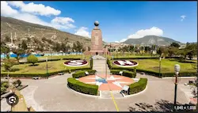

Boris Anderson Angulo Bolaños | WDD 130
Hello! My name is Anderson Angulo I'm from Colombia, I'm 30, and currently I live in Ecuador. I love spending
time with my wife and traveling a lot, we like watching movies and walking on the beach, I like to always
learn new things at BYU Idaho.
Ecuador

The "Middle of the World" (Mitad del Mundo) in Ecuador is a monument and tourist attraction located near Quito, marking the approximate location of the equator. It lies just north of the city, in the town of San Antonio de Pichincha. The site features a large monument with a line that indicates the equatorial line, where the Northern and Southern Hemispheres meet. Visitors can stand with one foot in each hemisphere and explore interactive exhibits about geography, culture, and science.
The site also has a small museum, and nearby, there's the Intiñan Solar Museum, which offers additional demonstrations about the effects of being on the equator, such as water draining in different directions or balancing an egg on a nail. The Middle of the World is a unique and popular destination for both locals and international tourists.